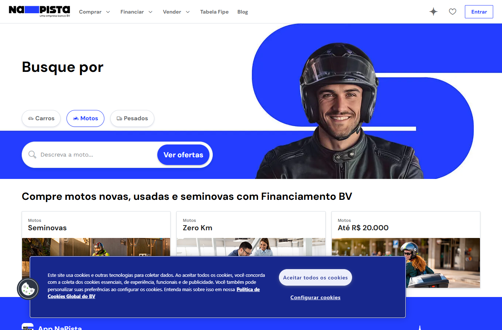
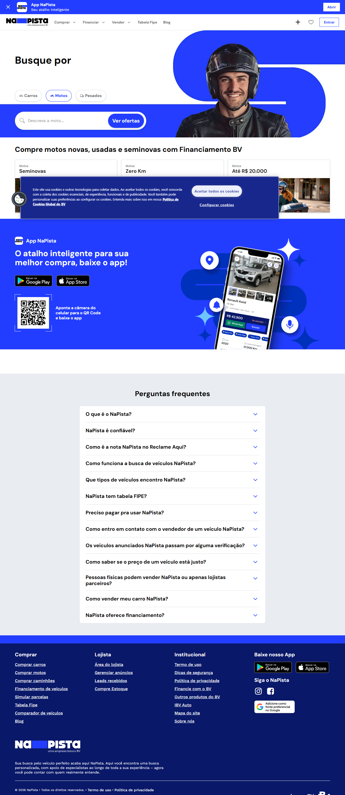

SIMIO · dossiê de candidato · campanha simio-20261118-184932-cc75 · gerado em 2026-11-18T20:44:56+00:00
https://napista.com.br/motos
REVIEW_REQUIRED Prioridade HIGH · Cenário C_POSSIBLE_OFFICIAL_CHANNEL · Revisão humana: PENDING
Este dossiê apresenta indícios para apoio à auditoria. Não constitui conclusão regulatória. As conclusões automatizadas devem ser verificadas contra as evidências brutas abaixo (screenshots, catálogo e arquivos com hash). Conteúdo de terceiros é exibido como texto; links não são clicáveis por segurança.
A página analisada (napista.com.br/motos) apresenta-se explicitamente como 'uma empresa banco BV' e 'um produto do Banco BV' [E-TXT-002, E-TXT-003, E-TXT-016], identificando-se no rodapé sob a razão social 'BVIA Negócios e Participações S.A. - CNPJ: 12.770.190/0001-05' [E-FTR] e direcionando links institucionais (como a política de cookies) para o domínio oficial bv.com.br [E-OFFICIAL-LINKS]. Embora possua fortes características de ser um portal oficial pertencente a uma subsidiária legítima do próprio conglomerado Banco BV, o domínio 'napista.com.br' não consta no rol de domínios oficiais previamente conhecidos da auditoria e foi pré-classificado pelo agente de identidade com baixa confiança. Assim, enquadra-se no cenário C_POSSIBLE_OFFICIAL_CHANNEL (classification REVIEW_REQUIRED, priority HIGH) para que a equipe de auditoria valide societariamente se a BVIA Negócios e Participações S.A. / NaPista é um canal próprio do grupo (devendo ser incluído na whitelist) ou uso não autorizado de identidade corporativa. [Revisor: CONFIRM] A hipótese do analista está bem fundamentada e equilibrada. As evidências demonstram que o portal 'NaPista' (napista.com.br) se declara explicitamente como 'uma empresa banco BV' e 'um produto do Banco BV' [E-SHOT-VIEWPORT, E-TXT-002, E-TXT-003, E-TXT-016], operando sob a razão social 'BVIA Negócios e Participações S.A.' (CNPJ 12.770.190/0001-05) [E-FTR, E-TXT-014] e integrando links institucionais para bv.com.br [E-OFFICIAL-LINKS]. Como o domínio não consta na lista de domínios oficiais previamente conhecidos (que lista apenas bv.com.br), confirma-se a classificação REVIEW_REQUIRED com prioridade HIGH para validação interna e eventual inclusão do domínio na lista de canais oficiais do conglomerado.


| Ref | Tipo | Local | Conteúdo |
|---|---|---|---|
| E-URL | domain | url | URL final: https://napista.com.br/motos (domínio: napista.com.br) |
| E-COLLECT | network | collection | Status da coleta: OK; HTTP 200; ocorrências: network did not become idle (continuing) |
| E-SHOT-VIEWPORT | screenshot | viewport | evidence\C8a15459e3e\attempt-1\viewport.png (sha256 751c174c5af2dbe4…) |
| E-SHOT-FULL | screenshot | page | evidence\C8a15459e3e\attempt-1\fullpage.png (sha256 39edc7fed71801b8…) |
| E-TITLE | title | head | Compre motos novas, usadas e seminovas com Financiamento BV | NaPista |
| E-META-1 | meta | head | description: Busca inteligente para encontrar a moto perfeito NaPista. Acesse e simule o financiamento com o Banco BV! |
| E-META-2 | meta | head | og:site_name: NaPista |
| E-META-3 | meta | head | og:title: Compre motos novas, usadas e seminovas com Financiamento BV | NaPista |
| E-META-4 | meta | head | og:description: Busca inteligente para encontrar a moto perfeito NaPista. Acesse e simule o financiamento com o Banco BV! |
| E-META-5 | meta | head | application-name: NaPista |
| E-CANONICAL | meta | head | https://napista.com.br/motos |
| E-HEAD-1 | heading | page | Compre motos novas, usadas e seminovas com Financiamento BV |
| E-HEAD-2 | heading | page | Perguntas frequentes |
| E-HDR | text | header | Comprar Financiar Vender Tabela Fipe Blog Entrar |
| E-FOLD | text | viewport (acima da dobra) | Comprar Financiar Vender Tabela Fipe Blog Entrar Sua busca pelo veículo perfeito acaba aqui NaPista. Busque por Yamaha Neo 2020 preto Carros Motos Pesados Descreva a moto... Ver ofertas Compre motos novas, usadas e seminovas com Financiamento BV Motos Seminovas Motos Zero Km Motos Até R$ 20.000 App NaPista Este site usa cookies e outras tecnologias para coletar dados. Ao aceitar todos os cookies, você concorda com a coleta dos cookies essenciais, de experiência, funcionais e de publicidade. Você também pode personalizar suas preferências ao configurar os cookies. Entenda mais sobre isso em nossa Política de Cookies Global do BV Aceitar todos os cookies Configurar cookies |
| E-FTR | text | footer | Comprar Comprar carros Comprar motos Comprar caminhões Financiamento de veículos Simular parcelas Tabela Fipe Comparador de veículos Blog Lojista Área do lojista Gerenciar anúncios Leads recebidos Compre Estoque Institucional Termo de uso Dicas de segurança Política de privacidade Financie com o BV Outros produtos do BV IBV Auto Mapa do site Sobre nós Baixe nosso App Siga o NaPista Sua busca pelo veículo perfeito acaba aqui NaPista. Aqui você encontra uma busca personalizada, com apoio de especialistas ao longo de toda a sua experiência – agora você pode contar com quem realmente entende. © 2026 NaPista • Todos os direitos reservados. • Termo de uso • Política de privacidade BVIA Negócios e Participações S.A. - CNPJ: 12.770.190/0001-05 Avenida Presidente Juscelino Kubitschek, 180, Andar 16, Itaim Bibi - CEP 04543-000, São Paulo - SP uma empresa banco BV |
| E-NAV | nav | header | NaPista <https://napista.com.br/> | Tabela Fipe <https://napista.com.br/tabela-fipe> | Blog <https://napista.com.br/blog> | Suas recomendações <https://napista.com.br/recomendacoes> | Seus anúncios favoritos <https://napista.com.br/minhaconta/favoritos> |
| E-CTA-1 | cta | header | Comprar |
| E-CTA-2 | cta | header | Financiar |
| E-CTA-3 | cta | header | Vender |
| E-CTA-4 | cta | header | Entrar |
| E-CTA-5 | cta | page | Carros |
| E-CTA-6 | cta | page | Motos |
| E-CTA-7 | cta | page | Pesados |
| E-CTA-8 | cta | page | Ver ofertas |
| E-CTA-9 | cta | page | O que é o NaPista? |
| E-CTA-10 | cta | page | NaPista é confiável? |
| E-CTA-11 | cta | page | Como é a nota NaPista no Reclame Aqui? |
| E-CTA-12 | cta | page | Como funciona a busca de veículos NaPista? |
| E-CTA-13 | cta | page | Que tipos de veículos encontro NaPista? |
| E-CTA-14 | cta | page | NaPista tem tabela FIPE? |
| E-CTA-15 | cta | page | Preciso pagar pra usar NaPista? |
| E-CTA-16 | cta | page | Como entro em contato com o vendedor de um veículo NaPista? |
| E-CTA-17 | cta | page | Os veículos anunciados NaPista passam por alguma verificação? |
| E-CTA-18 | cta | page | Como saber se o preço de um veículo está justo? |
| E-CTA-19 | cta | page | Pessoas físicas podem vender NaPista ou apenas lojistas parceiros? |
| E-CTA-20 | cta | page | Como vender meu carro NaPista? |
| E-CONTACT-1 | contact | footer | Instagram <https://www.instagram.com/napista_oficial> |
| E-CONTACT-2 | contact | footer | Facebook <https://www.facebook.com/napistapp> |
| E-OFFICIAL-LINKS | link | page | NaPista <https://napista.com.br/> | Tabela Fipe <https://napista.com.br/tabela-fipe> | Blog <https://napista.com.br/blog> | Suas recomendações <https://napista.com.br/recomendacoes> | Seus anúncios favoritos <https://napista.com.br/minhaconta/favoritos> | Motos Seminovas <https://napista.com.br/busca/motos/moto/seminova> | Motos Zero Km <https://napista.com.br/busca/motos/moto/zero-km> | Motos Até R$ 20.000 <https://napista.com.br/busca/motos/moto/ate-20.000-reais> | Comprar carros <https://napista.com.br/busca/carro> | Comprar motos <https://napista.com.br/busca/motos/moto> |
| E-TXT-001 | text | page | Compre motos novas, usadas e seminovas com Financiamento BV |
| E-TXT-002 | text | page | NaPista é o portal inteligente de veículos do Banco BV. A plataforma conecta compradores a lojistas parceiros credenciados, reunindo anúncios de carros, motos e veículos pesados com ferramentas como busca por linguagem natural, simulação de financiamento integrada e consulta à tabela FIPE — tudo num só lugar. |
| E-TXT-003 | text | page | NaPista é um produto do Banco BV, uma das maiores instituições financeiras do Brasil com mais de 35 anos de atuação no mercado de financiamento de veículos. Todos os anúncios são publicados por lojistas parceiros credenciados pelo banco, o que reforça a procedência dos veículos disponíveis na plataforma. |
| E-TXT-004 | text | page | NaPista faz parte do ecossistema Banco BV, que possui reputação "Bom" no Reclame Aqui e nota média de 7,7 em 2026. Esse resultado reflete o compromisso da instituição com atendimento ágil e resolução de demandas dos clientes. |
| E-TXT-005 | text | page | Não. A busca por veículos, a consulta à tabela FIPE e a simulação de financiamento são totalmente gratuitas pra quem quer comprar. O custo existe apenas para lojistas parceiros que anunciam na plataforma. |
| E-TXT-006 | text | page | Você pode enviar uma proposta diretamente pelo anúncio, realizar uma simulação de financiamento (que também notifica o lojista) ou acessar o perfil da loja parceira no portal pra consultar outras formas de contato. O lojista recebe a sua manifestação de interesse e entra em contato pra dar seguimento à negociação. |
| E-TXT-007 | text | page | A verificação e a descrição de cada veículo ficam a cargo do lojista parceiro responsável pelo anúncio. NaPista orienta seus parceiros a incluírem informações detalhadas (como IPVA pago, estado dos pneus, histórico de manutenção) e boas fotos pra que o comprador tenha o máximo de clareza antes de entrar em contato. |
| E-TXT-008 | text | page | Pessoas físicas podem vender NaPista ou apenas lojistas parceiros? |
| E-TXT-009 | text | page | Apenas lojistas parceiros credenciados pelo Banco BV podem anunciar veículos NaPista. Esse modelo garante que os anúncios venham de vendedores profissionais com compromisso comercial. |
| E-TXT-010 | text | page | Anunciar diretamente na plataforma é exclusivo pra lojistas parceiros, porém, se você é pessoa física e quer trocar de carro, pode incluir o seu veículo atual como "usado na troca" durante a simulação de financiamento. Dessa forma, o valor estimado do seu carro entra no cálculo e facilita a negociação com a loja parceira. |
| E-TXT-011 | text | page | A simulação de financiamento disponível NaPista é operada pelo Banco BV. Você pode simular condições de entrada e parcelas diretamente na plataforma, verificar pré-aprovação de crédito e iniciar a proposta sem sair do portal. A formalização do contrato acontece junto ao Banco BV e à loja parceira. |
| E-TXT-012 | text | page | Financie com o BV |
| E-TXT-013 | text | page | Outros produtos do BV |
| E-TXT-014 | text | page | BVIA Negócios e Participações S.A. - CNPJ: 12.770.190/0001-05 |
| E-TXT-015 | text | page | Avenida Presidente Juscelino Kubitschek, 180, Andar 16, Itaim Bibi - CEP 04543-000, São Paulo - SP |
| E-TXT-016 | text | page | uma empresa banco BV |
| E-TXT-017 | text | page | Este site usa cookies e outras tecnologias para coletar dados. Ao aceitar todos os cookies, você concorda com a coleta dos cookies essenciais, de experiência, funcionais e de publicidade. Você também pode personalizar suas preferências ao configurar os cookies. Entenda mais sobre isso em nossaPolítica de Cookies Global do BV |
| Dimensão | Sinal | Achado | Refs |
|---|---|---|---|
| VISUAL_IDENTITY | LEGITIMATE | O portal possui identidade visual própria ('NaPista'), mas com forte endosso institucional da marca Banco BV e paleta de cores azul/branco alinhada. | E-SHOT-VIEWPORT E-SHOT-FULL |
| DECLARED_COMMERCIAL_IDENTITY | CONFUSION | Apresenta-se como 'BVIA Negócios e Participações S.A. - CNPJ: 12.770.190/0001-05', declarando ser 'uma empresa banco BV' e 'produto do Banco BV' em domínio externo à lista inicial de domínios conhecidos. | E-URL E-FTR E-TXT-003 E-TXT-014 E-TXT-016 |
| CORRESPONDENT_TRANSPARENCY | NEUTRAL | Não há declaração de correspondente bancário, pois o site se declara como empresa/produto do próprio grupo econômico do Banco BV que conecta compradores a lojistas parceiros. | E-TXT-002 E-TXT-003 E-FTR |
| INSTITUTIONAL_LANGUAGE | CONFUSION | Adota linguagem de canal/produto oficial da instituição ('uma empresa banco BV', 'nossa Política de Cookies Global do BV', 'faz parte do ecossistema Banco BV'). | E-FOLD E-TXT-002 E-TXT-004 E-TXT-016 |
| LOGO_USAGE | CONFUSION | O logotipo da plataforma incorpora a assinatura 'uma empresa banco BV' no topo e no rodapé da página. | E-SHOT-VIEWPORT E-SHOT-FULL |
| SERVICE_JOURNEY | NEUTRAL | Oferece busca de veículos de lojistas credenciados e informa que a simulação de financiamento é operada pelo Banco BV. | E-HEAD-1 E-TXT-006 E-TXT-011 |
| CONTACT_CHANNELS | LEGITIMATE | Apresenta links diretos e legítimos para o domínio oficial bv.com.br (Financie com o BV, Outros produtos do BV, Política de Cookies) e redes sociais próprias (@napista_oficial). | E-OFFICIAL-LINKS E-CONTACT-1 E-CONTACT-2 |
| CONSUMER_CONFUSION | CONFUSION | O usuário compreende estar em uma plataforma oficial pertencente ao Banco BV. Caso não seja uma subsidiária legítima, há alto risco de confusão; caso seja empresa do grupo, requer atualização da base de domínios oficiais. | E-URL E-SHOT-VIEWPORT E-TXT-002 E-FTR |
A página analisada (napista.com.br/motos) apresenta-se explicitamente como 'uma empresa banco BV' e 'um produto do Banco BV' [E-TXT-002, E-TXT-003, E-TXT-016], identificando-se no rodapé sob a razão social 'BVIA Negócios e Participações S.A. - CNPJ: 12.770.190/0001-05' [E-FTR] e direcionando links institucionais (como a política de cookies) para o domínio oficial bv.com.br [E-OFFICIAL-LINKS]. Embora possua fortes características de ser um portal oficial pertencente a uma subsidiária legítima do próprio conglomerado Banco BV, o domínio 'napista.com.br' não consta no rol de domínios oficiais previamente conhecidos da auditoria e foi pré-classificado pelo agente de identidade com baixa confiança. Assim, enquadra-se no cenário C_POSSIBLE_OFFICIAL_CHANNEL (classification REVIEW_REQUIRED, priority HIGH) para que a equipe de auditoria valide societariamente se a BVIA Negócios e Participações S.A. / NaPista é um canal próprio do grupo (devendo ser incluído na whitelist) ou uso não autorizado de identidade corporativa.
Há declaração de correspondente ou de parceria, sem identificação suficiente ou sem confirmação cadastral.
| Tipo | Valor | Ref | Contexto |
|---|---|---|---|
| domain | napista.com.br | E-URL | |
| cnpj | 12.770.190/0001-05 | E-FTR | sta • Todos os direitos reservados. • Termo de uso • Política de privacidade BVIA Negócios e Participações S.A. - CNPJ: 12.770.190/0001-05 |
| legal_name | BVIA Negócios e Participações S.A | E-FTR | |
| social_profile | https://www.instagram.com/napista_oficial | E-CONTACT-1 | |
| social_profile | https://www.facebook.com/napistapp | E-CONTACT-2 | |
| trade_name | NaPista | E-META-2 | |
| partnership_declaration | parceiros | E-TXT-009 | Apenas lojistas parceiros credenciados pelo Banco BV podem anunciar veículos NaPista. |
| partnership_declaration | parceira | E-TXT-011 | A formalização do contrato acontece junto ao Banco BV e à loja parceira. |
Mapeamento indicativo para apoio à auditoria. Não constitui conclusão regulatória; a decisão definitiva pertence à auditoria.
Fonte: NORMATIVE
Art. 14. O contrato de correspondente deve estabelecer: [...] II - vedação à utilização, pelo contratado, de logomarca ou de outros atributos que sejam similares aos adotados pela instituição contratante em suas agências, postos de atendimento, sítio eletrônico na internet, aplicativo ou outras plataformas de comunicação em rede;
Hipótese: Uso de logomarca ou de atributos similares aos adotados pela contratante em seus canais. Aplicável somente se confirmado o vínculo de correspondente.
Evidência observada: E-FTR E-SHOT-FULL E-SHOT-VIEWPORT
Informação faltante:
Fonte: NORMATIVE
Art. 14. O contrato de correspondente deve estabelecer: [...] III - divulgação ao público, pelo contratado, de sua condição de prestador de serviços à instituição contratante, identificada pelo nome com que é conhecida no mercado, com descrição dos produtos e serviços oferecidos e canais de contato da instituição contratante, inclusive de sua ouvidoria, em local visível, em destaque e em formato legível, por meio de: a) sítio eletrônico do correspondente na internet, acessível na página inicial; b) aplicativo e outras plataformas de comunicação em rede do correspondente; [...]
Hipótese: Há declaração da condição de correspondente/prestador, mas outros elementos da página (DECLARED_COMMERCIAL_IDENTITY, CONSUMER_CONFUSION, INSTITUTIONAL_LANGUAGE) podem contradizê-la ou reduzir seu efeito (destaque, legibilidade e identificação da contratante a verificar). Aplicável somente se confirmado o vínculo de correspondente.
Evidência observada: E-FOLD E-FTR E-SHOT-VIEWPORT E-TITLE E-TXT-002 E-TXT-003 E-TXT-004 E-TXT-014 E-TXT-016 E-URL
Informação faltante:
Fonte: NORMATIVE
Art. 3º O correspondente atua por conta e sob as diretrizes da instituição contratante, que assume inteira responsabilidade pelo atendimento prestado aos clientes e usuários por meio do contratado.
Evidência observada: E-CONTACT-1 E-CONTACT-2 E-OFFICIAL-LINKS
Limitações: requisitos contratuais/internos não fornecidos: mapeamento limitado ao texto normativo
Decisão: CONFIRM → REVIEW_REQUIRED / HIGH
A hipótese do analista está bem fundamentada e equilibrada. As evidências demonstram que o portal 'NaPista' (napista.com.br) se declara explicitamente como 'uma empresa banco BV' e 'um produto do Banco BV' [E-SHOT-VIEWPORT, E-TXT-002, E-TXT-003, E-TXT-016], operando sob a razão social 'BVIA Negócios e Participações S.A.' (CNPJ 12.770.190/0001-05) [E-FTR, E-TXT-014] e integrando links institucionais para bv.com.br [E-OFFICIAL-LINKS]. Como o domínio não consta na lista de domínios oficiais previamente conhecidos (que lista apenas bv.com.br), confirma-se a classificação REVIEW_REQUIRED com prioridade HIGH para validação interna e eventual inclusão do domínio na lista de canais oficiais do conglomerado.
| Tema | Severidade | Questionamento | Refs |
|---|---|---|---|
| authorized_communication | LOW | A página apresenta múltiplos indicadores estruturais de pertencer legitimamente ao conglomerado do Banco BV (identificação da razão social 'BVIA Negócios e Participações S.A. - CNPJ: 12.770.190/0001-05', assinatura 'uma empresa banco BV' no logotipo e links institucionais apontando para bv.com.br, como a Política de Cookies Global). A necessidade de revisão decorre estritamente da ausência do domínio napista.com.br na lista prévia de domínios oficiais conhecidos fornecida no contexto. | E-URL E-FTR E-OFFICIAL-LINKS E-TXT-002 E-TXT-014 E-TXT-016 |
| Fonte | Consulta / hipótese | URL original | Título / trecho |
|---|---|---|---|
| grounding | páginas de financiamento de moto Banco BV mantidas por lojas, promotoras ou correspondentes que se parecem com o site do banco H2-product:financiamento de moto | https://napista.com.br/motos | napista.com.br *(Nota de auditoria: O portal **NaPista** — `napista.com.br` — também aparece com forte destaque oferecendo vitrine de motos de lojistas parceiros com simulador integrado de "Financiamento BV", porém trata-se de uma plataforma oficial integrante do próprio ecossistema do Banco BV, e não de um site mantido de forma independente por terceiros |
Original: https://napista.com.br/motos
Final: https://napista.com.br/motos
| Artefato | Caminho | SHA-256 | Bytes |
|---|---|---|---|
| screenshot_viewport | evidence\C8a15459e3e\attempt-1\viewport.png | 751c174c5af2dbe414c20b1e8e23ebcc62181f0c04b3948ae48764ff63a59927 | 403426 |
| screenshot_full | evidence\C8a15459e3e\attempt-1\fullpage.png | 39edc7fed71801b847a37892a8fcc9064f27f76446e408231e00d7d520cb59ac | 694653 |
| html | evidence\C8a15459e3e\attempt-1\page.html.txt | a4127c04236bdb486c04031ef25d0965d85e2ee6f9a46dc46eb78e1687e200b2 | 198877 |
| text | evidence\C8a15459e3e\attempt-1\text.txt | 2c6ff132b64a158bc60ea869a7e5c6b2c95a8374e3c420f2183dde75c2cab185 | 6297 |
| page_data | evidence\C8a15459e3e\attempt-1\page.json | b136d5d3b29829e0064e86fe92524ce3cbad1d6de8a684beef5123b6f5e292cc | 20515 |
| Quando | De | Para | Nota |
|---|---|---|---|
| 2026-11-18T19:13:21+00:00 | DISCOVERED | QUEUED | prioritised (score 3.5) |
| 2026-11-18T19:14:43+00:00 | QUEUED | COLLECTING | |
| 2026-11-18T19:15:02+00:00 | COLLECTING | COLLECTED | |
| 2026-11-18T19:15:02+00:00 | COLLECTED | ANALYZING | |
| 2026-11-18T19:15:37+00:00 | ANALYZING | REVIEWING | |
| 2026-11-18T19:15:51+00:00 | REVIEWING | COMPLETED |